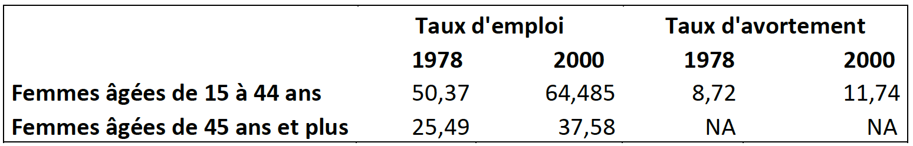

Données et méthodologie
![]()
- Données
Pour réaliser l’analyse, nous avons besoin de données sur le taux d’emploi des femmes et le nombre d’avortement réalisé en fonction de l’âge pour le Canada et ses provinces, avant et après la réforme concernant l’avortement.
Taux d’emploi des femmes
Nous utilisons les données sur le taux de chômage, le taux d’activité et le taux d’emploi selon le sexe, données annuelles de Statistiques Canada Gouvernement du Canada (2023). Ces données s’étendent de 1976 à 2022, pour chaque province du Canada et pour différents groupes d’âges des hommes et des femmes.
Taux d’avortement
Nous utilisons les données sur les issues de la grossesse (naissances vivantes, avortements provoqués et pertes foetales) de Statistiques Canada Gouvernement du Canada (2018). Elles s’étendent de 1974 à 2005 et indiquent les issues de la grossesse en fonction de l’âge et du lieu de résidence de la femme. Ces données sont combinées et comparés aux statistiques historiques sur l’avortement récoltées par Wm. Robert Johnston “Historical Abortion Statistics, Quebec (Canada)†(n.d.) qui elles s’étendent de 1969 à 2021. L’avortement était pratiqué dès 1969 pour des raisons de sécurité vis-à -vis de la mère, certains furent pratiqués illégalement. Les données ont été téléchargées sous forme de tableau Excel, les données ont été rangées de même manière pour chacune des provinces pour faciliter les manipulations sur Stata (même titre de colonne, colonne sous forme numérique).
Manipulations Excel
Les données ont été téléchargées individuellement pour chaque province sous forme de tableau Excel et ont été rangées de même manière pour faciliter les manipulations sur Stata/Rstudio (même titre de colonne, colonne sous forme numérique). Une fois importée sdans le logiciel, nous avons entreprit d’autres manipulations sur les données notamment pour garder uniquement les variables d’intérêt et combiner les différents fichiers Excel en une seule base de données que nous avons par la suite utilisée comme base de données principale pour l’analyse causale.
- Méthodologie
Pour analyser l’effet causal, nous allons utiliser la méthode des doubles différences. Nous avons deux groupes : le groupe de contrôle et le groupe de traitement. Le groupe de contrôle se constitue des femmes de plus de 45 ans tandis que le groupe de traitement se constituent des femmes de 15 à 44 ans. Le traitement considéré sera la légalisation de l’avortement en 1988.
Notre équation de départ est la suivante :
ğ‘‡ğ‘¥_ğ‘’ğ‘šğ‘ğ‘™ğ‘œğ‘–!†= ğ›½# + ğ›½$𝑡 + ğ›½%𝐷! + ğ›½&(𝐷! ∗ 𝑡) + ğ‘’!”
Légende :
𝐷! = 1 pour le groupe de traitement et 0 pour le groupe de contrôle
𑡠= 1 désigne l’après traitement et 0 désigne l’avant traitement
𝐷! ∗ 𝑡 = 1 si on considère le groupe traitement à la période post-traitement, 0 sinon
L’hypothèse principale pour la méthode des doubles différences repose sur la tendance parallèle. Cette hypothèse affirme que, en l’absence de traitement, la tendance de notre variable d’intérêt pour le groupe contrôle et le groupe traitement sont parallèle dans le temps. Ainsi, dans notre cas on s’attend à ce que les taux d’emploi pour les femmes de 15 à 44 ans et les femmes de 45 ans soient parallèle avant la légalisation de l’avortement. Cette hypothèse va être vérifier dans la section suivante qui concerne l’analyse descriptive.
Analyse descriptive
Notre variable d’intérêt est le taux d’emploi des femmes au Canada. Nous allons observer comment cette variable a été influencée par la légalisation de l’avortement en 1988. Pour ce faire, nous allons utiliser la méthode des doubles différences avec comme groupe de traitement ‘les femmes de 15 à 44 ans’ et comme groupe de contrôle ‘les femmes de 45 ans et plus’. Notre analyse considère une période pré-traitement – 10 ans avant la légalisation de l’avortement – et une période post-traitement – un peu plus de 10 ans après la légalisation de l’avortement. Ainsi, notre période s’étend de 1978 à 2000. Avant de commencer une quelconque analyse économétrique, nous présentons les variables présentes dans notre base de données principales ainsi que quelques statistiques descriptives. Notre base de données – construites à partir des taux d’emploi rendus disponibles par Statistiques Canada et des taux d’avortement enregistrés par Wm. Robert Johnston – contient des données de panel ainsi que les variables présentes dans le Tableau 1.

Étant donné la présence de deux groupes dans notre analyse – groupe contrôle et groupe traitement – nous comparons les valeurs du taux d’emploi et du taux d’avortement pré et post-traitement.

On constate un taux d’emploi moyen plus élevé pour les femmes âgées de 15 à 44 ans par rapport aux femmes âgées de 45 ans et plus. Le taux d’avortement pour le groupe contrôle est indiquée par NA car les femmes âgées de 45 ans et plus ont un taux d’avortement pratiquement nulle étant donné que la ménopause arrive en moyenne entre 45 ans et 55 ans (add sources).
References
Citation
@online{hubacova2023,
author = {Juliana Hubacova},
editor = {},
title = {Données Et Méthodologie},
date = {2023-09-21},
langid = {en}
}